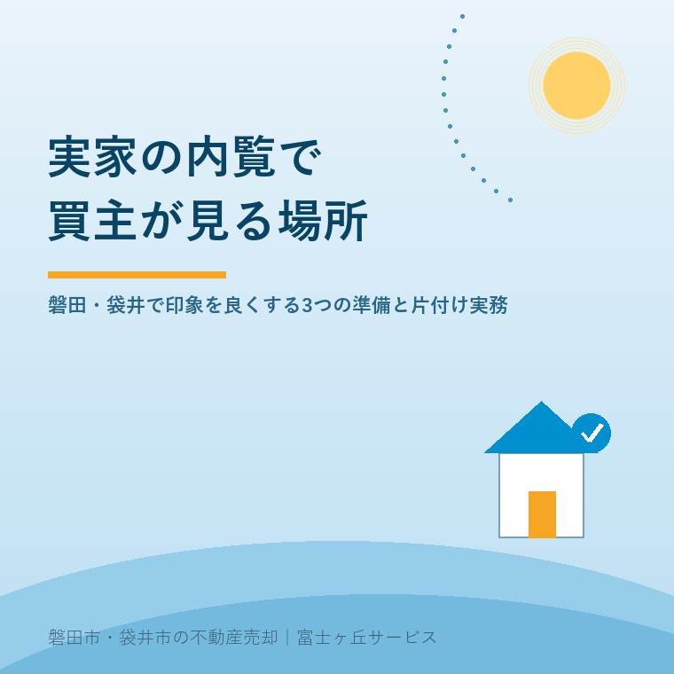

実家の内覧で買主が見ている場所｜磐田・袋井で印象を良くする3つの準備
公開日：2026年9月12日 ｜ 著者：大石浩之（宅地建物取引士）

この記事の結論
Q. 実家の内覧を成功させるために、売主が準備すべき最も重要なことは？
A. 高額なリフォームをする必要はありません。「家全体の徹底的な換気とにおい対策」「水回りの拭き上げ」「すべての照明を点灯させて明るさを演出すること」の3点です。 磐田市・袋井市の実情に即し、宅地建物取引士として買主の心理を踏まえた内覧実務を整理します。
実家の内覧が成否を分ける理由と買主が見ている3つの急所
磐田市や袋井市で相続した実家を売りに出し、検討者から「内覧の希望が入りました」と不動産会社から連絡が入ったとき、売主様は期待と同時に「この古い家のままで大丈夫だろうか」と不安を感じられることでしょう。
ネット上の写真や図面を見て現地にやってくる買主様は、すでに価格や立地の条件をクリアした上で訪れています。内覧は「写真通りの安心感があるか」「ここで暮らすイメージが持てるか」を確認するための最終確認の場なのです。第一印象が良ければ成約へ直結しますが、暗さやにおいに圧倒されると見送りになってしまいます。
宅地建物取引士として数多くの内覧に立ち会ってきた経験から、買主様が口に出さずとも厳しくチェックしている急所は以下の3点です。
- 1. 玄関の「におい」と換気：締め切った空き家特有のカビ臭や下水臭は警戒感を招きます。内覧前には窓を全開にして風を通し、排水トラップに水を注いでおくことが極めて重要です。
- 2. 水回り（キッチン・浴室・トイレ）の清潔感：最新設備である必要はありませんが、水垢や油汚れ、カビは厳しく見られます。水滴を拭き取り鏡を磨くだけで大切にされてきた印象を与えられます。
- 3. 部屋の「明るさ」と照明全点灯：薄暗い部屋は狭く感じられます。雨戸やカーテンをすべて開け、廊下・トイレ・居室の照明を「全点灯」させておくのが不動産実務の鉄則です。
高額リフォームの失敗を避け地元業者の案内力を生かす
実家を売る際、良かれと思って「数百万円かけて壁紙やキッチンを新しくしてから売りに出そう」とされる売主様がいらっしゃいますが、これはおすすめできません。現在の中古住宅購入者の多くは「できるだけ安く現状のまま買い、自分好みにリノベーションしたい」と考えているため、売主様のリフォーム費用が無駄になるリスクが高いからです。費用をかけるなら「残置物の片付け」と「清掃」に充てるのが正解です。
また、売主様が安心して内覧を任せるための良い点は、磐田・袋井エリアの土地勘がある地域密着の不動産会社を選ぶことです。近隣の住環境やゴミ収集のルールなど、生活者の細かな疑問にその場で即答できる担当者がつくと成約率は格段に上がります。
一方、注文したい点・注意点は、鍵を現地キーボックスに入れっぱなしにして他社に勝手に案内させる放置状態です。自社の営業担当者が責任を持って立ち会い、案内後の施錠と消灯をきちんと報告してくれる会社を選ぶことが安心につながります。
今日からできる内覧準備とチェックリスト
内覧の予定が入ったら、以下の準備を今日から進めてください。
- 家中の窓を開けて換気し、排水トラップに水を注ぐ。
- 玄関のたたきにある余分な靴を靴箱にしまい、広く見せる。
- 切れている電球を交換し、内覧開始前に全室点灯する。
売却の媒介契約については、前回の記事専任媒介と一般媒介の選び方や空き家3000万円特例控除の注意点もご参照ください。
よくあるご質問と参考にした公表情報
- 内覧前にリフォームしておいた方が高く売れますか？
- リフォーム費用を買取価格や売却価格に全額上乗せできる保証はありません。多くの買主は自分好みにリノベーションしたいと考えているため、リフォームせず荷物の撤去と清掃を徹底する方が賢明です。
- 売主は内覧当日に立ち会うべきですか？
- 空き家の場合は不動産会社に鍵を預けて案内を任せるのが一般的です。居住中の場合は立ち会い、近所の住み心地や日当たりなど生活者ならではの長所を簡潔にお伝えすると好印象になります。
- 照明器具やエアコンは残しておいても大丈夫ですか？
- 内覧時に部屋を明るく見せるため、照明器具は動作する状態で残しておくのが鉄則です。引き渡し時に残すか撤去するかは付帯設備表で買主と取り決めます。

執筆者：大石浩之（宅地建物取引士）
富士ヶ丘サービス株式会社 代表取締役。磐田市・袋井市・森町を中心に、実家じまい・空き家管理・相続売却の相談を一軒ずつ受けています。売主様の立場に寄り添い、無駄な出費を抑えた賢い売却実務をご提案します。プロフィール詳細
- 国土交通省「不動産取引の手引き・中古住宅流通の現状」（2026年9月12日確認）
- 公益社団法人 全日本不動産協会「住まいを売る時の注意点」（2026年9月12日確認）
※本記事は2026年9月12日現在の実務情報に基づき執筆しています。個別の物件状況や価格査定については現地調査が必要です。